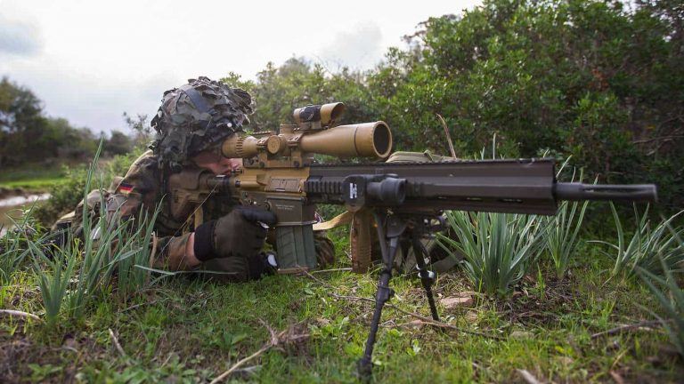
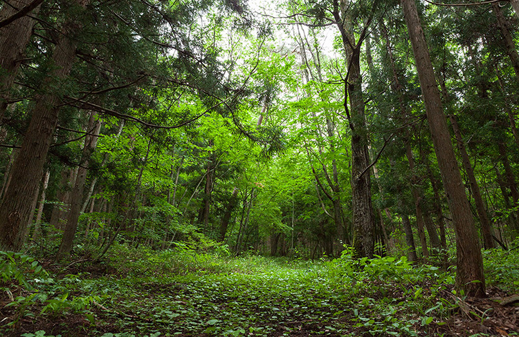

情報ネットワーク工学科 204234 戸井愛翔
やってみたい事
サバゲーやってみたい!!

趣味の所でもAPEXというFPSを紹介しましたが、僕は銃を使った戦闘が好きでリアルでもそんな体験がしてみたいなアと思っていました。（だからといって戦争行きたいとかそんなんではなく）そんな中、サバイバルゲーム通称サバゲーといったトイガンを用いて行うスポーツのようなものがあると聞きまして、やりたい！と思うようになりました。サバゲーするにもいろいろなものが必要であると知り、今集めている途中ですね。今はコロナで出来ることができませんが落ち着いたら、ぜひしてみたいですね。ロマンではありませんか？おんなじサイズの銃をぶん回しながらリアル感を味わえる最高の体験になると思います。久留米にはインドアフィールドが一軒あるみたいですね。インドアフィールドもいいんですが

こんな感じの森林のフィールド、アウトドアフィールドもやってみたいですね。森林の中で走り回りながら敵を倒したりしたらきっともう楽しいでしょうね。暑苦しくなりながら本気でやるサバゲーはどのYouTubeを見ても楽しそうです。武装等を気にしだしたらすごくお金がかかってしまいそうですね。でも趣味とかにお金をかけるので実質0円ですよ。ただで軍拡できますね、やったー！
今は、コロナもあり自作PCも作っちゃってお金もないですが。バイトで稼ぎたいと思います。苦あれば楽ありそんなことを信じて今は耐えようと思います。